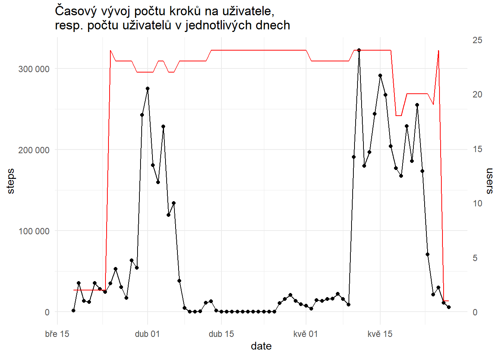

rm(list=ls())Zápočet 20. 6. 2024
Data o pohybové aktivitě z chytrých náramků
| Jméno a příjmení | Studentské číslo | Datum |
|---|---|---|
| Ondřej Švorc | st101971 | 20. 6. 2024 |
Vymazání lokálního proměnného prostředí
Načtení knihoven
suppressPackageStartupMessages({
library(dplyr)
library(ggplot2)
library(knitr)
library(lubridate)
library(stringr)
library(DBI)
library(tidyr)
library(tidyverse)
})Nastavení pracovní složky
if (!requireNamespace("here", quietly = TRUE)) {
install.packages("here")
}
library(here)here() starts at C:/Users/student.CPTO/Downloads/Švorc_zapocet_zzdsetwd(here())Připojení k Gadgetbridge databázi a naplnění df
# Naváže spojení s lokální SQLite databází "Gadgetbridge"
con <- dbConnect(RSQLite::SQLite(), dbname="Gadgetbridge")
# Načte všechna data z tabulky MI_BAND_ACTIVITY_SAMPLE do datového rámce "df"
df <- dbGetQuery(con,'select * from MI_BAND_ACTIVITY_SAMPLE')
# Odpojí se od databáze (již není potřeba být k ní být připojen).
dbDisconnect(con)Mutace df za účelem vytvoření UTC datumového sloupce z dat z TIMESTAMP sloupce
df$datetime <- as_datetime(df$TIMESTAMP)
df$datetime %>% head(5)[1] "2021-03-18 17:09:00 UTC" "2021-03-18 17:10:00 UTC"
[3] "2021-03-18 17:10:00 UTC" "2021-03-18 17:11:00 UTC"
[5] "2021-03-18 17:11:00 UTC"„Z času odečtěte 2 hodiny.“
df <-
df %>%
mutate(datetime = datetime - hours(2))
df$datetime %>% head(5)[1] "2021-03-18 15:09:00 UTC" "2021-03-18 15:10:00 UTC"
[3] "2021-03-18 15:10:00 UTC" "2021-03-18 15:11:00 UTC"
[5] "2021-03-18 15:11:00 UTC"# Pro ujištění se, že veškeré mutace dopadly v pořádku.
df %>% head(3) TIMESTAMP DEVICE_ID USER_ID RAW_INTENSITY STEPS RAW_KIND HEART_RATE
1 1616087340 1 1 29 0 112 255
2 1616087400 1 1 3 0 112 255
3 1616087400 2 1 23 0 112 255
datetime
1 2021-03-18 15:09:00
2 2021-03-18 15:10:00
3 2021-03-18 15:10:00Vytvořte následující graf. Uživatel je určen proměnnou DEVICE_ID. V grafu je použita sekundární osa (sec.axis).
# "2021-03-18 15:09:00 UTC => "2021-03-18"
df$date <- as_date(df$datetime)
df$date %>% head(5)[1] "2021-03-18" "2021-03-18" "2021-03-18" "2021-03-18" "2021-03-18"Výpočet počtu kroků uživatele v každém datu.
# Předá přes rouru "df",
# sjednotí dle sloupce "date"
# a provede sumu kroků pro každého uživatele k danému datu.
daily_steps <-
df %>%
group_by(date) %>%
summarise(steps = sum(STEPS), users = n_distinct(DEVICE_ID))
daily_steps %>%
arrange(desc(steps)) %>%
head(5)# A tibble: 5 × 3
date steps users
<date> <int> <int>
1 2021-05-11 322481 24
2 2021-05-15 291056 24
3 2021-04-01 275352 22
4 2021-05-16 267527 24
5 2021-05-22 255159 20Vykreslení grafu ukazující časový vývoj počtu kroků na uživatele.
user_scaling_factor <- max(daily_steps$steps) / max(daily_steps$users)
ggplot(daily_steps, aes(x = date)) +
geom_line(aes(y = steps), color = "black") +
geom_point(aes(y = steps), color = "black") +
geom_line(aes(y = users * user_scaling_factor), color = "red") +
scale_y_continuous(
name = "steps",
labels = scales::number_format(accuracy = 1),
sec.axis = sec_axis(~./user_scaling_factor, name = "users", labels = scales::number_format(accuracy = 1))
) +
labs(title = "Časový vývoj počtu kroků na uživatele,\nresp. počtu uživatelů v jednotlivých dnech") +
theme_minimal()
Vytvořte následující tabulku. Tabulka zobrazuje ve vybraných dnech počty kroků jednotlivých uživatelů. K zobrazení je využita funkce knitr::kable().
# Zjištění nejnižšího a nejvyššího DEVICE_ID.
min_id <- min(df$DEVICE_ID)
max_id <- max(df$DEVICE_ID)
print(min_id)[1] 1print(max_id)[1] 26# DEVICE_ID tedy může být hodnota v rozsahu 1:26
all_possible_ids <- min_id:max_id
# Všechna ID.
unique_device_ids <- unique(df$DEVICE_ID)
# Dá se chápat jako rozdíl dvou množin.
# Výsledkem jsou chybějící IDs.
# (jen pro přehled/zajímavost, kdyby jich chybělo třeba více)
missing_ids <- setdiff(all_possible_ids, unique_device_ids)
missing_ids[1] 13# Vlastní funkce pro filtrování datumů, které jsou v daném rozsahu.
# Kód filter() byl používán tímto způsobem na vícero místech.
#
# %>% = pipe/roura operátor
# & = a zároveň
filter_dates <- function(data, start_date = "2021-05-10", end_date = "2021-05-23") {
data %>% filter(date >= as.Date(start_date) & date <= as.Date(end_date))
}user_steps_by_date <-
df %>%
group_by(date, DEVICE_ID) %>%
summarise(steps = sum(STEPS)) %>%
pivot_wider(names_from = DEVICE_ID, values_from = steps)`summarise()` has grouped output by 'date'. You can override using the
`.groups` argument.# Sloupec "8" se vykresluje až jako poslední sloupec.
# Přemístění sloupce "8" mezi "7" a "9".
user_steps_by_date <-
user_steps_by_date %>%
select(date, `1`, `2`, `3`, `4`, `5`, `6`, `7`, `8`, everything()) %>%
filter(date >= as.Date("2021-05-10") & date <= as.Date("2021-05-23")) %>%
filter_dates()
kable(user_steps_by_date)| date | 1 | 2 | 3 | 4 | 5 | 6 | 7 | 8 | 9 | 10 | 11 | 12 | 14 | 15 | 16 | 17 | 18 | 19 | 20 | 21 | 22 | 23 | 24 | 25 | 26 |
|---|---|---|---|---|---|---|---|---|---|---|---|---|---|---|---|---|---|---|---|---|---|---|---|---|---|
| 2021-05-10 | 13180 | 604 | 9052 | 8085 | 10133 | 2158 | 11152 | 6871 | 9591 | 1249 | 6663 | 4099 | 14154 | 599 | 11136 | 15576 | 9865 | 9179 | 16535 | 0 | 7368 | 12285 | 9171 | NA | 2066 |
| 2021-05-11 | 0 | 2581 | 15192 | 13412 | 14645 | 10874 | 15276 | 8578 | 19689 | 10369 | 3488 | 12238 | 20935 | 12562 | 17723 | 20041 | 12596 | 12716 | 22344 | 11777 | 16961 | 17432 | 15804 | NA | 15248 |
| 2021-05-12 | 0 | 3571 | 7334 | 9368 | 9700 | 9312 | 792 | 10433 | 10696 | 7470 | 13254 | 6155 | 10558 | 4996 | 7757 | 12048 | 4109 | 5888 | 10830 | 7591 | 5166 | 10031 | 9482 | NA | 3247 |
| 2021-05-13 | 0 | 6708 | 9427 | 7471 | 12519 | 8887 | 5730 | 11650 | 15756 | 5546 | 8367 | 10255 | 14287 | 12362 | 6188 | 6100 | 5166 | 6763 | 10154 | 5461 | 10636 | 6709 | 8977 | NA | 1534 |
| 2021-05-14 | 0 | 4567 | 13589 | 15245 | 13009 | 2567 | 1355 | 7226 | 10917 | 18109 | 10416 | 8769 | 16956 | 11204 | 9076 | 11467 | 7180 | 11408 | 12587 | 9880 | 14032 | 10597 | 18215 | NA | 5556 |
| 2021-05-15 | 0 | 10757 | 7159 | 25416 | 14593 | 5477 | 6880 | 4462 | 14084 | 26957 | 7640 | 16720 | 23519 | 11378 | 5512 | 7088 | 9536 | 13501 | 24024 | 2702 | 20009 | 7491 | 17225 | NA | 8926 |
| 2021-05-16 | 0 | 5889 | 9068 | 17179 | 21280 | 10391 | 9468 | 10818 | 14088 | 19439 | 8119 | 12867 | 13707 | 10814 | 10877 | 11452 | 7658 | 4444 | 10175 | 2368 | 18801 | 16421 | 12668 | NA | 9536 |
| 2021-05-17 | 0 | 5398 | 5257 | 7098 | 10820 | 6242 | 9362 | 11772 | 7137 | 8397 | 5194 | 9155 | 13552 | 1242 | 5305 | 11541 | 7526 | 10130 | 14924 | 12890 | 7729 | 8966 | 11107 | NA | 13394 |
| 2021-05-18 | 770 | 7480 | NA | 15847 | 13177 | 13685 | 0 | NA | 8953 | 15699 | 11691 | 3919 | 14397 | 5561 | 4601 | 11456 | NA | 9021 | NA | 14191 | 13650 | NA | NA | NA | 12982 |
| 2021-05-19 | 16013 | 6174 | NA | 9928 | 7876 | 10064 | 0 | NA | 6508 | 11199 | 12504 | 11805 | 12169 | 1503 | 9779 | 16186 | NA | 7301 | NA | 12881 | 12939 | NA | NA | NA | 2469 |
| 2021-05-20 | 11210 | 7156 | NA | 14635 | 15043 | 4631 | 13241 | 12398 | 11410 | 14015 | 9541 | 8885 | 16573 | 8714 | 10124 | 7916 | NA | 9074 | NA | 12187 | 16369 | NA | 15918 | NA | 9836 |
| 2021-05-21 | 12816 | 6151 | NA | 8776 | 12159 | 5589 | 0 | 20490 | 3283 | 9038 | 624 | 12946 | 3311 | 6740 | 15496 | 9709 | NA | 8319 | NA | 18482 | 7534 | NA | 15743 | NA | 8790 |
| 2021-05-22 | 14205 | 3672 | NA | 11541 | 17436 | 8507 | 23934 | 22327 | 14632 | 15388 | 17539 | 6429 | 0 | 6429 | 10714 | 7504 | NA | 7315 | NA | 15379 | 7028 | NA | 20599 | NA | 24581 |
| 2021-05-23 | 7095 | 7250 | NA | 5472 | 15546 | 5140 | 7739 | 5589 | 11176 | 6360 | 4996 | 15269 | 0 | 15320 | 19609 | 6944 | NA | 4393 | NA | 2697 | 11452 | NA | 12393 | NA | 8846 |
V poslední části již využijete také data v souboru schedule.csv, který obsahuje školní rozvrh uživatelů.
schedule <- read.csv("schedule.csv")
schedule %>% head(10) day subject from to school
1 Monday Czech 8:00 8:45 TRUE
2 Monday Math 8:55 9:40 TRUE
3 Monday Natural Science 9:50 10:35 TRUE
4 Monday Czech 11:00 11:45 TRUE
5 Tuesday Czech 8:00 8:45 TRUE
6 Tuesday Math 8:55 9:40 TRUE
7 Tuesday Physical Education 9:50 10:35 TRUE
8 Tuesday English 11:00 11:45 TRUE
9 Tuesday Czech 11:55 12:40 TRUE
10 Wednesday Czech 8:00 8:45 TRUEdf$HEART_RATE %>% head(10) [1] 255 255 255 255 255 255 255 255 255 255Vaším úkolem je zobrazit následující graf, který zpracovává
data z proměnné
HEART_RATEpůvodní databáze,přičemž započítává pouze ta pozorování, ve kterých tato proměnná nabývá hodnot (0,255)(0,255),
ve dnech dle první zobrazované tabulky, tj. od 10. května do 23. května,
v době výuky dle výše uvedeného rozvrhu, konkrétně v závislosti na vyučovaných předmětech.
# Pro správnou funkci weekdays. Chceme, aby se vygenerovali
# názvů dnů v angličtině.
Sys.setlocale("LC_TIME", "en_US.UTF-8")[1] "en_US.UTF-8"# Přidání dnů v týdnu v angličtině.
filtered_df <-
df %>%
filter(HEART_RATE > 0 & HEART_RATE < 255) %>%
filter_dates() %>%
mutate(day = weekdays(date))
# Provedení spojení na základě sloupce "day".
# Sjednocení dle předmětu.
merged_data <- filtered_df %>%
inner_join(schedule, by = "day") %>%
group_by(subject)Warning in inner_join(., schedule, by = "day"): Detected an unexpected many-to-many relationship between `x` and `y`.
ℹ Row 1 of `x` matches multiple rows in `y`.
ℹ Row 1 of `y` matches multiple rows in `x`.
ℹ If a many-to-many relationship is expected, set `relationship =
"many-to-many"` to silence this warning.# Vykreslení grafu.
ggplot(merged_data, aes(x = HEART_RATE, y = subject)) +
geom_boxplot() +
labs(x = "HEART_RATE", y = "subject") +
theme_minimal() +
theme(
panel.background = element_rect(fill = "grey95", color = NA)
)
# Vrácení lokalizace do původního stavu (bylo-li RStudio původně v češtině).
Sys.setlocale("LC_TIME", "cs_CZ.UTF-8")[1] "cs_CZ.UTF-8"